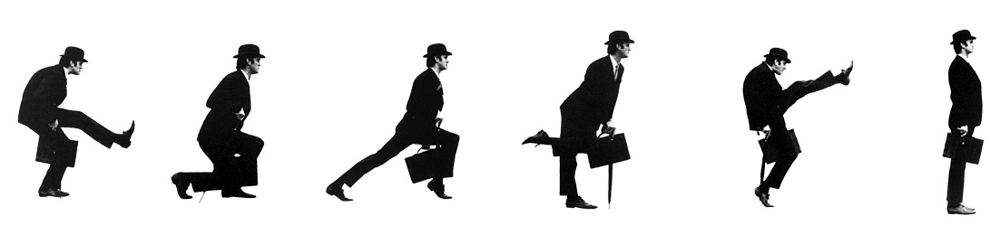
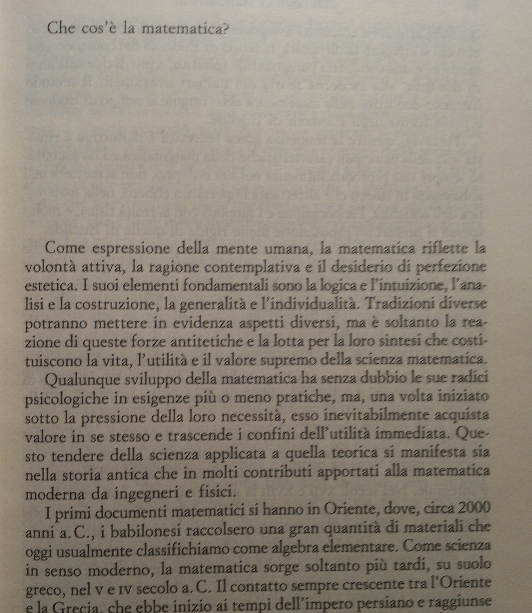
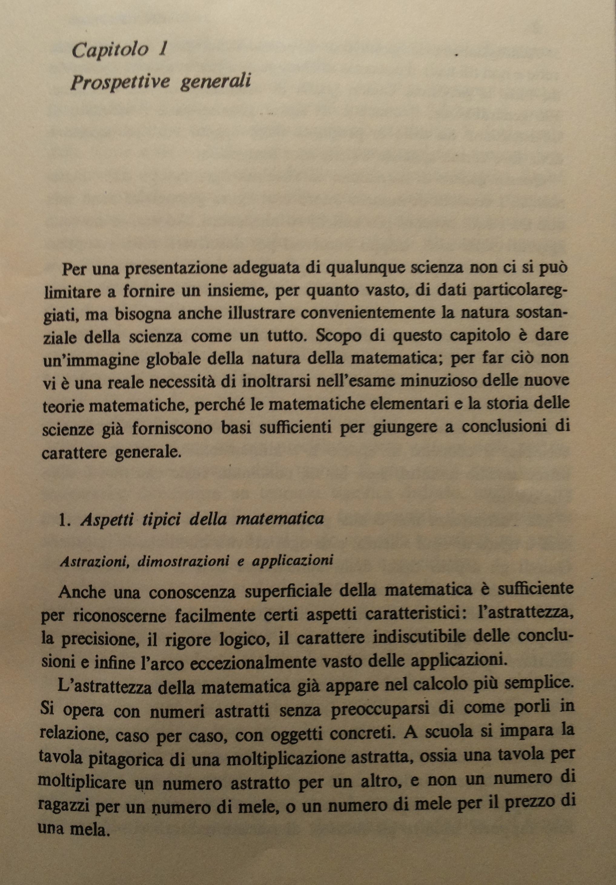
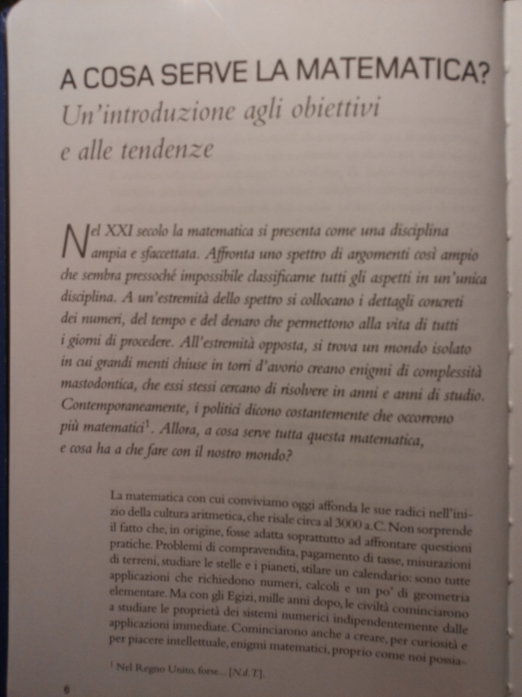
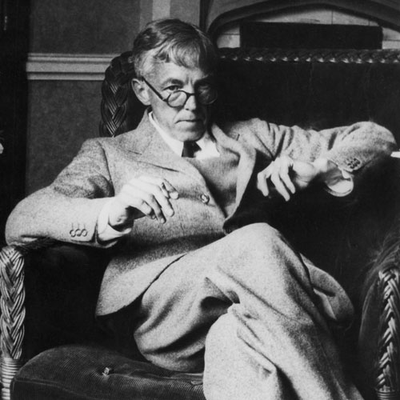
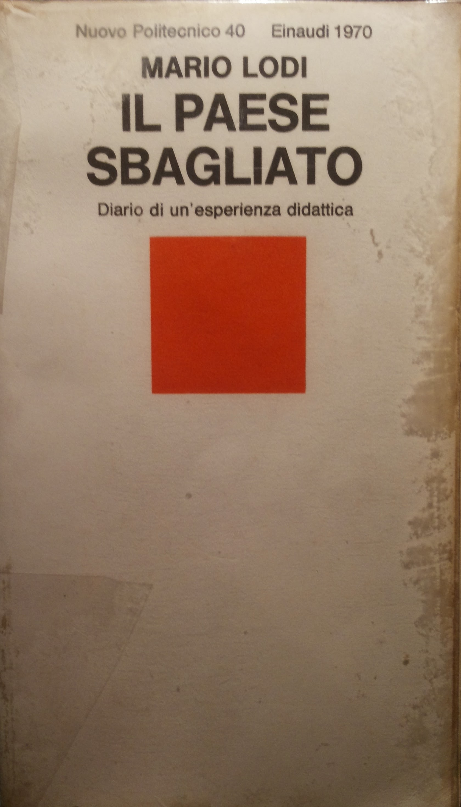

La poesia dell'inutile
Spunti per un discorso sull'insegnamento della matematica
R.Giannitrapani
Liceo Scientifico "Marinelli" - Udine
Tutto nasce da una lettera al Ministro

A cosa serve la matematica
o
Cos'è la matematica
Circa 1941

Circa 1974

Circa 2011

Godfrey Harold Hardy

Il matematico, come il pittore e il poeta, è un creatore di forme.
(il matematico) infatti sente che la ragione d'essere della matematica non si trova in queste rozze realizzazioni, che il rispetto popolare di cui gode la matematica si fonda in larga misura proprio sull'ignoranza e sulla confusione, che c'è posto per una difesa più razionale.
Non ho mai fatto niente di utile.
Jorge Luis Borges
Como la música, las matemáticas pueden prescindir del universo, cuyo ámbito comprenden y cuyas ocultas leyes exploran.
".. per la musica, misteriosa forma del tempo."
Wislawa Szymborska
Non ho difficoltà a immaginare un’antologia dei più bei frammenti della poesia mondiale in cui trovasse posto anche il teorema di Pitagora. Perché no? Lì c’è quella folgorazione che è connaturata alla grande poesia, e una forma sapientemente ridotta ai termini più indispensabili, e una grazia che a non tutti i poeti è stata concessa.
Francesco
Due nuove operazioni matematiche, la mollicazione di un numero e la strambazione.
- Il mollicato di 31 è 13
- 5 strambato 2 = 52
La matematica serve?
Ovviamente si!
Ovviamente?
Traiettorie di meteoriti (sic) in un videogioco (aiuta Marco e Luca ...)
Progetto di un artigiano per una teca di cristallo
Gestione del flusso di persone nella curva nord di uno stadio
Progetto di un vaso da fiori
Tariffa telefonica di un gestore di telefonia mobile
Nessuno degli esempi è convincente
Forzatura (a volte caricaturale)
Perché non esempi realistici?
Perché non insegnare la matematica per la matematica?
Ci sono voluti 2000 anni per affrancare il pensiero matematico dal mondo reale, perché tornare indietro?
La matematica è poesia.
Poesia? Sicuro prof?

Cose che possono aiutare
- Letteratura, filosofia, storia
- Opinioni e reinterpretazioni personali
- Informale
- Strumenti digitali (cum grano salis)
Uno degli ostacoli maggiori alla scoperta del desiderio rimane la valutazione

Lentezza
Fatica
Fallimento
(test della Kobayashy-Maru)
Universalità
Inutilità
Ho sognato che avevo disegnato tasti
di pianoforte sul tavolo di cucina.
Io ci suonavo sopra, erano muti.
I vicini venivano ad ascoltare.
Tomas Tranströmer- ilprofbicromatico.wordpress.com
- orporick.bitbucket.org
- riccardo.giannitrapani@gmail.com
- www.twitter.com/orporick
- www.facebook.com/riccardo.giannitrapani
- plus.google.com/+RiccardoGiannitrapani/about